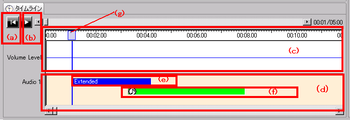
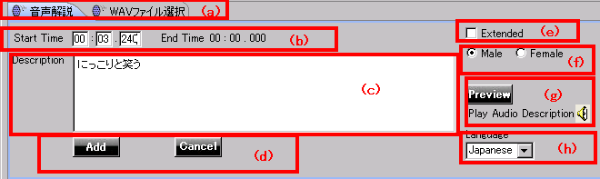
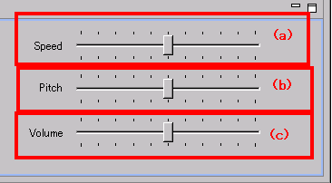
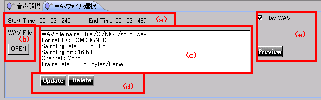
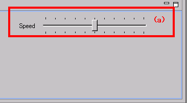
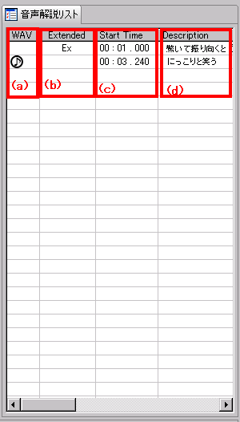

目次に戻る
各パネルの詳細説明
ここで説明するパネルは下記のとおりです。
タイムラインパネル

図１：タイムラインパネル
- (a)リロード
- 動画を最初に戻して、最初から表示を行います。
- (b)再生・停止
- 動画の再生・停止を行います。再生と停止ボタンはトグルボタンになっています。
- (c)動画の音声タイムライン
- 再生している動画の元からついている音量を波形にして時系列で表示します。
自動でスクロールします。
- (d)音声ガイドのタイムライン
- 作成した音声ガイドを時系列で表示します。(c)と連動しています。
- (e)拡張の音声ガイド
- 音声ガイドを拡張（動画をとめて音声ガイドのみ再生する）方式で再生する場合は
青いバーになり、Extendedという表示がされます。
- (f)通常の音声ガイド
- 音声ガイドを通常の方式で再生する場合は緑色になります。
wavファイルで再生する場合は音符マークがつきます。
- (g)現在の再生位置表示
- 現在動画のどの部分を再生しているのかをわかりやすくするためのラインです。
音声ガイド入力パネル

図２：音声ガイド入力パネル 左部分
- (a)パネル切り替えタブ
- 合成音声による入力とwavの選択のパネルを切り替えます
- (b)開始・終了時間表示部
- 音声合成を開始するタイミングを指定します。終了時間は自動的に計算されて入ります。
- (c)入力部
- 読上げたい音声ガイドをテキストで入力するためのフィールドです。
- (d)追加/変更・削除、キャンセルボタン
- 作成した音声ガイドを追加するときはAdd,既に存在している音声ガイドを修正する場合はAddの代わりにUpdateかDeleteボタンが表示されています。操作をやめたい場合はCancelを押下します。
- (e)拡張音声ガイド指定
-
元の動画の無音部分が短く、音声ガイドがその時間には入りきらない場合に、元の動画を止めて
詳細な説明を入れることがあります。これを拡張音声ガイドと呼びます。拡張音声ガイドを指定したい場合は、ここにチェックを入れます。
- (f)音声ガイドの性別切り替え
- 男性音か女性音かを選べます。
- (g)合成音声の試聴
- 正しく読上げるか試聴するためのボタンです。
- (h)言語切り替え
- 音声合成の言語の切り替えを行います。現在日本語と英語のみ対応しています。

図３：音声ガイド入力パネル 右部分
- (a)スピード調整
- 合成音声のスピードを変更します。右側の方にスライダーを移動させると速くなり、左側に移動すると遅くなります。通常の50%〜200%が選択できます。
- (b)音の高低調整
- 合成音声のピッチを変更します。右側の方にスライダーを移動させると高くなり、左側に移動すると低くなります。
- (c)音量の調整
- 合成音声の音量を変更します。右側の方にスライダーを移動させると大きくなり、左側に移動すると小さくなります。動画の元の音声の大きさによって変更します。

図４：音声ガイド入力パネル wav選択パネル 左部分
- (a)開始・終了時間
- 音声合成を開始するタイミングを表示します。ここは表示のみです。変更したい場合は、タイムラインパネルの再生位置の表示を移動して、変更してください。
- (b)wavファイル選択ボタン
- 使用したいwavファイルを選択するためにこのボタンを押下します。選択のダイアログボックスが現れます。
- (c)wav情報表示フィールド
- 選択されたwavの情報を表示します。なお、このフィールドにファイルをドラッグ＆ドロップし入力することも出来ます。
- (d)変更、キャンセルボタン
- 選択したwavを確定したい場合にUpdateボタンを押下します。操作をやめたい場合はCancelを押下します。
- (e)プレビューボタン
- Play WAVにチェックを入れPreviewボタンを押下すると選択されたwavがプレビューできます。

図５：wav選択パネル 右部分
- (a)スピード調整
- 合成音声のスピードを変更します。右側の方にスライダーを移動させると速くなり、左側に移動すると遅くなります。
通常の50%〜200%が選択できます。
音声ガイドのリストパネル

図６：音声ガイドリストパネル
- (a)wav表示フィールド
- wavファイルが選択されているか否かを表示します。音符ボタンがあればwavが選択されています。
- (b)拡張表示フィールド
- 拡張か通常かを表示します。Exという文字があれば拡張で音声ガイドが再生されます。
- (c)開始時間
- 音声ガイドが動画中のどのタイミング（時刻）に再生されるのか表示しています。
- (d)音声ガイド
- 音声ガイドの内容が表示されます。
目次に戻る